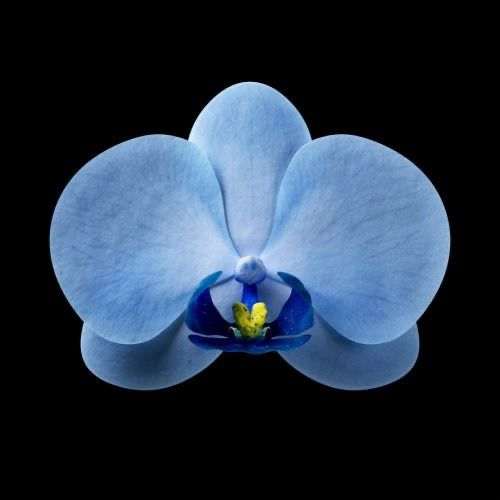

Every word
I had to look up
Orchid people talk in a private language. Here is the whole of it, in one list, so nobody has to nod along at a plant fair pretending to know what a viscidium is.
showing
- Aerial root
- A root growing out into the air rather than down into the pot. Completely normal on epiphytes, which absorb moisture straight from humid air. Do not cut them off and do not stuff them back in.
- Anther cap
- The little hinged lid on the tip of the column that covers the pollinia until an insect knocks it aside. Often falls off on its own once a flower has been pollinated.
- Asymbiotic germination
- Raising orchid seed in a sterile flask on a nutrient jelly, without the fungal partner it would need in the wild. Demonstrated by Lewis Knudson in 1922 and the basis of the entire modern orchid trade.
- Awards (HCC, AM, FCC)
- Judging marks given to outstanding individual plants by orchid societies. Highly Commended Certificate, Award of Merit and First Class Certificate, in ascending order of glory. Written after the cultivar name.
- Back bulb
- An older, usually leafless pseudobulb behind the active growth. Looks finished; often isn't. Potted separately, many will push a new shoot from a dormant eye.
- Blue and rainbow orchids
- Nearly always a white Phalaenopsis that has had dye injected into its flower spike. The plant is unharmed and perfectly good, but the next flowers it produces will come out white. Anything sold as a rainbow or galaxy orchid is dyed, painted or edited — no orchid makes those colours. Genuinely blue ones do exist: Vanda coerulea is the famous one, and it is nothing like as vivid.
- Bud blast
- Buds yellowing and dropping before they open. Caused by sudden change — a move, a draught, dry air, or ethylene gas from ripening fruit in the same room.
- CAM photosynthesis
- Crassulacean acid metabolism: opening the leaf pores at night instead of during the day to save water, and storing the carbon dioxide until morning. Common in epiphytic orchids, which live somewhere permanently at risk of drying out.
- CITES
- The Convention on International Trade in Endangered Species. Every orchid species on earth is listed under it — the entire family — with the rarest, including many slipper orchids, in the strictest category.
- Column
- Also gynostemium. The fused male and female organs at the centre of an orchid flower, unique to the family in this form. If you can find a column, you have found an orchid.
- Crown
- The point at the centre of a monopodial orchid where the leaves emerge. Water left standing here overnight causes crown rot, which kills quickly.
- Cultivar
- One specific individual plant, selected and then cloned, so that every copy is identical. Written in single quotes: Phalaenopsis Sogo Yukidian 'V3'.
- Deflasking
- Taking seedlings out of their sterile flask and potting them into the real world. The most dangerous day in a lab-raised orchid's life.
- Division
- Propagating a sympodial orchid by cutting through the rhizome. Keep three or four pseudobulbs per piece, or the division will sulk for years.
- Dorsal sepal
- The single sepal that ends up at the top of an open flower. In Paphiopedilum slippers it grows into a tall striped hood over the pouch.
- Endosperm
- The food store packed into most seeds alongside the embryo. Orchid seed has none, which is why it cannot germinate on its own.
- Epiphyte
- A plant that grows on another plant without feeding off it — a tenant, not a parasite. Most orchids are epiphytes on tree bark.
- Eye
- A dormant bud on a rhizome or flower spike, waiting for the right conditions. What a keiki or a new growth emerges from.
- Flask
- The sterile sealed jar in which orchid seedlings are raised on nutrient jelly. Sold by the flask, containing anything from twenty to a hundred seedlings.
- Grex
- The collective name given to all offspring of one particular cross of parents, whatever they turn out to look like. Capitalised but not italicised, and registered internationally with the Royal Horticultural Society.
- Inflorescence
- The whole flowering structure — stalk, branches and all the flowers on it. Casually called the spike.
- Keiki
- Hawaiian for baby. A miniature plant, genetically identical to its parent, that sprouts from a node on a spike or cane. Detach it once it has two or three roots about 5 cm long.
- Labellum
- The lip. The third petal, remodelled into a landing platform, a signpost, a nectar store or occasionally a trap. Almost all of an orchid's strangeness lives here.
- Lithophyte
- A plant that grows on bare rock, living off rainwater and whatever debris collects in the cracks.
- Mericlone
- A plant mass-produced from meristem tissue — genetically identical to the original. The technique, published by Georges Morel in 1960, is why orchids stopped being a luxury.
- Meristem
- The knot of undifferentiated cells at a growing tip, capable of becoming any part of the plant. Cut out and cultured, it can be multiplied almost indefinitely.
- Monopodial
- A growth habit: one upright stem growing from its tip, forever, with no pseudobulbs. Phalaenopsis, Vanda, Vanilla.
- Mycorrhiza
- A partnership between a plant's roots and a fungus. In orchids it is not an optional extra — wild seed cannot germinate without one, and some species never stop depending on it.
- Node
- A joint on a stem or flower spike, marked by a small triangular bract. Cut a spent Phalaenopsis spike about 2 cm above one and it will often branch and flower again.
- Orchidelirium
- The Victorian collecting mania, roughly 1830 to 1900, in which vast sums were paid for tropical orchids and whole hillsides were stripped to supply them.
- Pollinium (plural pollinia)
- Orchid pollen, packed into a waxy block instead of loose dust, so an entire flower's worth transfers in one go. Usually attached to a sticky pad that glues it to a visiting insect.
- Protocorm
- The green pinhead stage after an orchid seed germinates — neither root nor shoot yet, just a small lump of potential.
- Pseudobulb
- A swollen storage stem on sympodial orchids, holding water and food between seasons. Wrinkling means the plant is genuinely thirsty, or has lost its roots.
- Resupinate
- Describing a flower that has rotated 180° as it opened, bringing the lip from the top to the bottom. Standard practice in this family, and quietly astonishing.
- Rhizome
- The horizontal stem along which a sympodial orchid creeps, producing a new growth each season. The thing you cut when dividing.
- Rostellum
- A flap of tissue on the column that keeps pollen away from the flower's own stigma. On vanilla it is the reason the crop had to be pollinated by hand.
- Salep
- Flour milled from dried orchid tubers, used to thicken a hot milk drink across Turkey and the Middle East. Once sold on London streets as saloop. It takes thousands of wild tubers to make a kilogram.
- Sheath
- The papery green pocket at the top of a mature pseudobulb, from which the flower spike will eventually emerge. Its arrival is a promise, sometimes an empty one.
- Spur
- A hollow tube extending backwards from the lip, holding nectar. Its length is a direct measurement of the pollinator's tongue — which is how Darwin predicted a moth he never saw.
- Sympodial
- A growth habit: creeping sideways along a rhizome, throwing up a new shoot and pseudobulb each season. Cattleya, Dendrobium, Oncidium, Cymbidium.
- Synsepal
- The two lateral sepals fused into one, sitting behind the pouch of a slipper orchid.
- Terrestrial
- Growing in the ground rather than on a tree. Includes most temperate orchids, and the reason the family has a reputation in Europe for being small and green rather than enormous and pink.
- Velamen
- The spongy silver-white sheath around an epiphyte's roots, built to soak up a rainstorm in seconds and then dry out fast. It turns bright green when wet — the most useful watering indicator you own.
- Viscidium
- The sticky pad attached to the pollinia, which glues them onto a visiting insect. Extremely effective; ask anyone who has removed a pollinium from their finger.
- Zygomorphic
- Having one line of symmetry, like a face, rather than radiating like a wheel. All orchid flowers are zygomorphic, which is a large part of why they look like they are watching you.
Nothing under that word — try something shorter.
A short reading list
Books I keep going back to, in the order I would hand them over.
- Susan Orlean, The Orchid Thief (1998). A journalist follows an orchid poacher through the Florida swamps and ends up writing about obsession itself. The best possible entry point, and not really a plant book.
- Eric Hansen, Orchid Fever (2000). Funnier and angrier — smugglers, customs seizures, and the unintended damage done by well-meaning conservation law.
- Jim Endersby, Orchid: A Cultural History (2016). How this one family ended up standing for sex, wealth, empire and evolution, all at once.
- Charles Darwin, Fertilisation of Orchids (1862). Out of copyright and free to read online. Genuinely readable, and you can feel him enjoying himself.
Where to go and stare
- Kew Gardens, London. The Princess of Wales Conservatory holds orchids year-round, and Kew usually mounts a large orchid festival in February, when everyone in Britain needs it most.
- Royal Botanic Garden Edinburgh. A serious research collection with glasshouses to match, and cool-growing species that a Scottish climate suits rather well.
- The National Orchid Garden, Singapore. Thousands of species and hybrids grown outdoors, because they can be.
- Your nearest orchid society. Almost every region has one. Monthly meetings, plant tables, expertise given away free, and the cheapest interesting plants you will ever buy.
bright shade. soak it, then let it dry. fresh bark every other year. that's it. that's the whole diary.

Everything here is general information written by an enthusiast, not horticultural advice for a specific plant in a specific room — and definitely not medical advice, whatever Theophrastus thought the tubers were for. If a plant matters to you and something is going wrong with it, an orchid society will diagnose it faster and more kindly than any website, including this one.